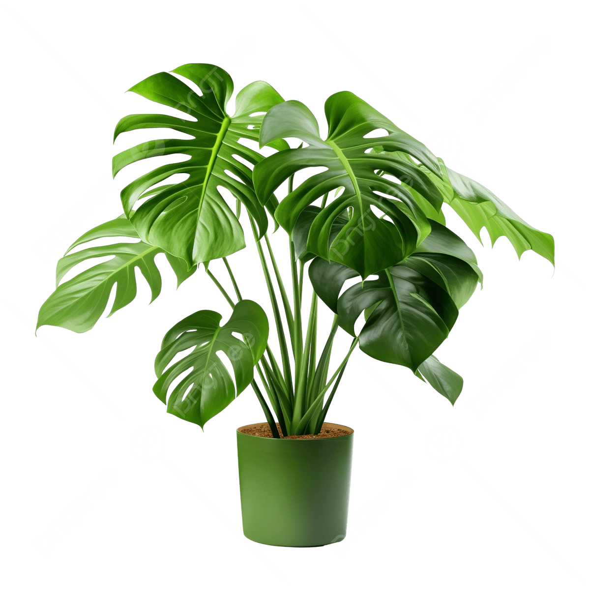

Learning Web Standards
Monsteras

Why I Love Monsteras
I chose a png image of a monstera plant because they are my first favorite type of plant.
Fenestrations are the holes and splits in Monstera leaves. These unique patterns help the plant withstand heavy rain and wind in its natural habitat.
Some Monstera plants have leaves with white or yellow patterns. These variegated varieties are highly sought after and can be quite expensive.
Under ideal conditions, Monstera plants can grow several feet in a year.
Photo Source